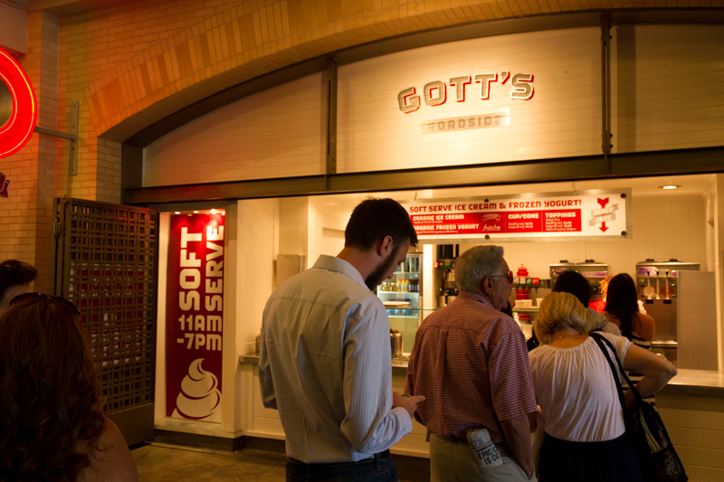

 The giant neon sign over the ordering counter says “Eat.” It gets right to the point of what Gott’s Roadside Tray Gourmet is all about. Here, fast food is fine food made with fresh, high quality ingredients. This one of three Gott’s Roadside eateries in the Bay Area, All three feature burgers, fish tacos, ahi burgers, garlic fries, soups and salads, and hand-scooped milkshakes. Specials range from soft shell crab tacos, barbecued pulled pork sandwiches, duck confit tacos, and portabella reuben sandwiches.
Owners Joel and Duncan Gott like to use Ferry Plaza Farmers Market produce and other ingredients from local suppliers. The atmosphere is fun and friendly, making Gott’s Roadside a great place to have lunch and dinner whether dining alone, with a group, or for families with children. Beer and wine are offered and there are a lot of food options for children. There is plenty of seating both inside and outdoors on the Embarcadero—or you can order “to go.”
Daily: 7–10
Frozen Yogurt: 11–7
(866) EAT-FOOD
(866) 328-3663
Marketplace Shop #6
View Location